Composição química da célula
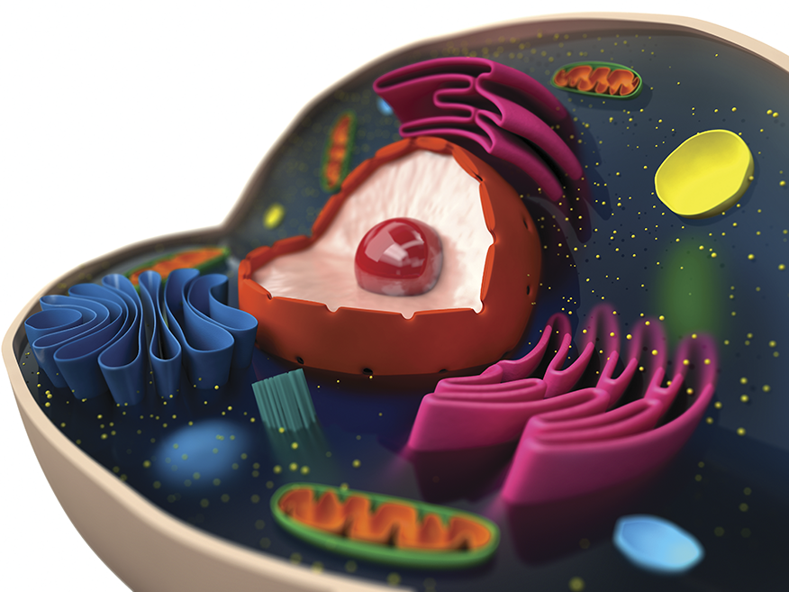
Representação artística de alguns componentes celulares.
eranicle/Shutterstock.com
O uso do microscópio possibilitou a descoberta das estruturas celulares e, a partir do aprimoramento desses equipamentos, foi possível tomar conhecimento de pequenas estruturas funcionais presentes no interior da célula, conhecidas como organelas ou organoides.
Mas onde estão inseridas essas organelas?
As organelas se distribuem no espaço delimitado pela membrana plasmática, o citoplasma. Elas se encontram embebidas pela porção líquida dessa região – o citosol, composta de água, proteínas, íons e outras moléculas, dissolvidas ou suspensas, que possibilitam a interação, a manutenção e o funcionamento das organelas.
- A composição do citoplasma de células procarióticas é a mesma das células eucarióticas?
- Que vantagens a compartimentalização confere às células eucarióticas?
- Como as organelas podem interagir no interior da célula?

Neste capítulo serão abordadas as habilidades
EM13CNT201,
EM13CNT202,
EM13CNT301 e
EM13CNT303.
Citoplasma: o interior das células
Vimos, anteriormente, que o surgimento de compartimentos celulares bem como a delimitação do material genético por um envoltório nuclear contribuíram muito para o aumento da complexidade não só estrutural, mas também funcional das células.
Ao visualizarmos uma célula procariótica, notamos que ela é composta de um único compartimento delimitado pela membrana plasmática, no qual se encontra presente o material genético e também os ribossomos.
O interior de uma célula eucariótica, por sua vez, se mostra repleto de estruturas compostas ou não de membranas, podendo se apresentar organizadas em canais e tubos pontualmente localizados. Cada uma dessas estruturas internas, denominadas organelas, apresenta funções bem determinadas no compartimento celular. A maior parte dessas estruturas origina-se a partir de dobras sofridas pela membrana plasmática.
Em geral, atribui-se o termo citoplasma ao espaço delimitado pela membrana plasmática, que, no caso das células eucarióticas, compreende a porção entre a membrana plasmática e o envoltório nuclear.
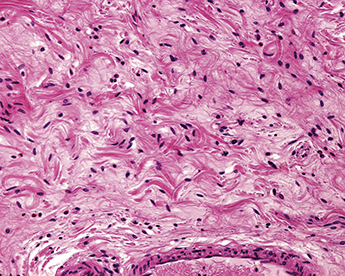
Microscopia óptica evidenciando núcleo (em roxo) e citoplasma (em rosa) de uma célula de tecido conjuntivo após preparo com corante hematoxilina e eosina (HE).
Jose Luis Calvo/Shutterstock.com
Citosol
Nos dois tipos celulares, a maior parte do citoplasma é preenchida por uma parte líquida denominada citosol. Responsável por grande parte do volume celular, o citosol é, majoritariamente, composto de água (cerca de 80%) e contém inúmeras moléculas, tais como proteínas, lipídeos, aminoácidos, íons e vitaminas. Nele ocorrem vários processos metabólicos, sendo muitas vezes o local de produção de substâncias. É pelo citosol que essas substâncias são transportadas até saírem das células ou após entrarem nelas.
Citoesqueleto
Você já deve ter reparado que nos mamíferos, por exemplo, há uma enorme variedade de formatos e tamanhos de células. O citoesqueleto é um conjunto de fibras dispostas pelo citosol, cuja principal função está relacionada à determinação e à modificação dessas formas celulares, bem como à reorganização interna após processos de divisão e crescimento celular.
Ferramentas como o microscópio eletrônico e o microscópio de fluorescência contribuíram para a identificação das fibras presentes no citoplasma de células eucarióticas. Nesse tipo celular existem três fibras diferentes compondo o citoesqueleto: microfilamentos de actina, filamentos intermediários e microtúbulos.
São caracterizados por apresentar o menor diâmetro (entre 5 e 6 nm) quando seu tamanho é comparado ao das demais fibras do citoesqueleto (filamentos intermediários e microtúbulos). Os microfilamentos são formados por subunidades de actina e se encontram distribuídos perifericamente na célula, em contato com partes da membrana plasmática. Essa distribuição está associada às funções desempenhadas por essas fibras, as quais são:
-
forma celular;
- movimento celular a partir da formação de pseudópodes – estruturas que auxiliam na locomoção e alimentação de seres unicelulares, por exemplo, e também na ciclose – tráfego interno de organelas e citosol ao redor do grande vacúolo presente em células vegetais;
-
contratilidade celular quando em associação com proteínas motoras, garantindo o processo de citocinese na célula animal.
Proteínas motoras são moléculas envolvidas, entre outros eventos, no transporte de organelas e de vesículas nas células. Para que funcionem, dependem do consumo de energia. Elas são capazes de interagir com os microfilamentos de actina e os microtúbulos (estes últimos são componentes do citoesqueleto e serão estudados adiante). Alguns exemplos desse tipo de proteína são as cinesinas, as dineínas e a miosina. Enquanto as duas primeiras interagem com os microtúbulos, a miosina é capaz de interagir com os microfilamentos de actina, a fim de executar processos que exijam a contratilidade celular.
Filamentos intermediários
Os filamentos intermediários são compostos de diversos fios de proteínas, entre as quais se destaca, principalmente, a queratina. Eles se encontram distribuídos por todo o interior do citoplasma, criando uma espécie de arcabouço resistente que mantém as células unidas por meio de desmossomos, por exemplo. Assim, esses filamentos conferem a alguns tecidos uma alta resistência à tensão, além de estruturarem o envoltório nuclear.
Fazendo referência ao próprio nome, o diâmetro (8 e 10 nm) apresentado por essas fibras é maior que o dos microfilamentos de actina, porém é menor do que o apresentado pelos microtúbulos.
| Disposição das fibras do citoesqueleto |
|---|
| Microfilamento de actina |
Filamento intermediário |
Microtúbulo |
|
|
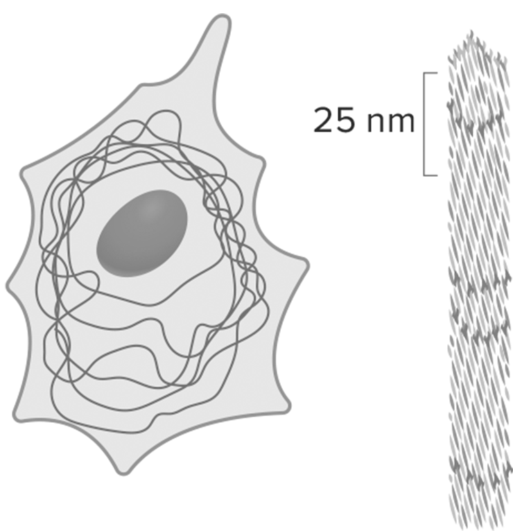
|
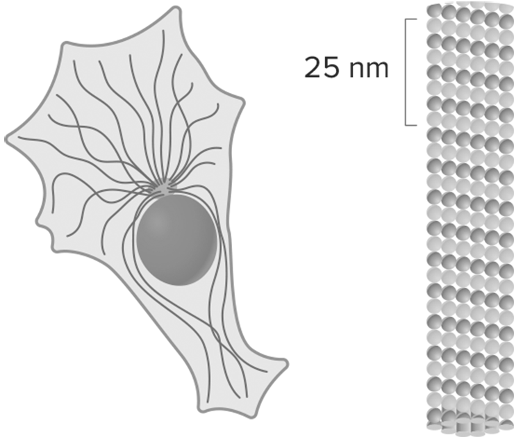
|
Microtúbulos
As fibras do citoesqueleto que apresentam o maior diâmetro (20 e 25 nm) são os microtúbulos. Eles são mais rígidos que os microfilamentos de actina, são constituídos da agregação de inúmeras subunidades de proteína tubulina e se originam a partir de uma região específica localizada próximo ao núcleo das células eucarióticas, chamada centro organizador de microtúbulos (MTOC, do inglês microtubule-organizing center) ou centrossomo. Nessa região, os microtúbulos são constantemente alongados e encurtados, gerando alterações no volume celular.
Entre suas funções, os microtúbulos posicionam as organelas membranosas no citoplasma, compõem os centríolos, os cílios e os flagelos de algumas células, participam do processo de divisão celular interagindo com oscromossomos ou, no caso das células vegetais, orientando a formação da parede celular, já que, assim como os microfilamentos de actina, os microtúbulos também se associam a proteínas motoras, garantindo o transporte de vesículas e organelas de maneira orientada pelo citoplasma.
Por muito tempo, acreditou-se que o citoesqueleto seria exclusivo de células eucarióticas. Entretanto, pesquisas mostraram que as células procarióticas apresentam proteínas homólogas à tubulina, à actina e aos filamentos intermediários encontrados nas primeiras. Contudo, ainda não foram identificadas proteínas acessórias, como as proteínas motoras, que contribuem para a execução de algumas funções do citoesqueleto.
Assim, infere-se que, evolutivamente, o desenvolvimento desse grupo de proteínas tenha sido fundamental para a elaboração da estrutura celular eucariótica, com destaque para o tamanho assumido por elas em comparação ao das células procarióticas.
Organelas
A presença de compartimentos funcionalmente distintos e constituídos de membrana permite diferenciar células procarióticas de eucarióticas, uma vez que eles são encontrados somente nas últimas. Todavia, algumas organelas são compartilhadas entre os dois tipos celulares. Cada uma delas desempenha funções específicas, e especialmente aquelas envoltas por membrana ocupam locais específicos no citoplasma, graças à interação com o citoesqueleto.
Ribossomos
Em todos os tipos celulares são encontrados os ribossomos, que podem estar livres no citosol, associados às membranas do retículo endoplasmático ou, ainda, presentes no interior de organelas como mitocôndrias e cloroplastos.
Os ribossomos se distinguem das demais organelas por não serem derivados de membranas, isto é, serem organelas não membranosas. Mas, então, de que são feitos os ribossomos? A resposta para essa questão exige a retomada de conteúdo de capítulos anteriores, nos quais foram estudados os ácidos nucleicos.
A estrutura dos ribossomos é formada por RNA (ácido ribonucleico) e proteínas, e cada organela apresenta duas subunidades proteicas, uma maior e outra menor. A visualização dessas estruturas só é possível por meio do uso de microscópio eletrônico. Apesar dos componentes em comum, os ribossomos encontrados em organismos procariontes e eucariontes apresentam algumas distinções, tais como tamanho e tipos de proteínas que estão ali presentes.
Em todos os locais onde são encontrados, os ribossomos desempenham a função de sintetizar proteínas. Nesse processo, o RNA mensageiro derivado do núcleo celular interage com inúmeros ribossomos acoplados, os quais formam os chamados polirribossomos ou polissoma.

Representação esquemática de um ribossomo.
Jose Luis Calvo/Shutterstock.com
Retículo endoplasmático
Correspondendo a mais da metade da membrana total das células animais, o retículo endoplasmático, ou ergastoplasma, é um conjunto de túbulos ramificados, contínuos à membrana nuclear externa, que se interconectam por meio de vesículas formadas entre eles. Tais vesículas também podem ser encaminhadas para diversos pontos da célula em que serão utilizadas, sendo o retículo endoplasmático o responsável por essa distribuição. Entretanto, a principal função dessa organela é a de biossíntese de moléculas de lipídeos e proteínas, que ocorre de acordo com as especializações que as membranas do retículo podem sofrer.
A principal especialização que o retículo endoplasmático pode apresentar é a presença de ribossomos acoplados às suas membranas e, assim, distingue-se em retículo endoplasmático não granuloso (ou retículo endoplasmático liso) e retículo endoplasmático granuloso (ou retículo endoplasmático rugoso).
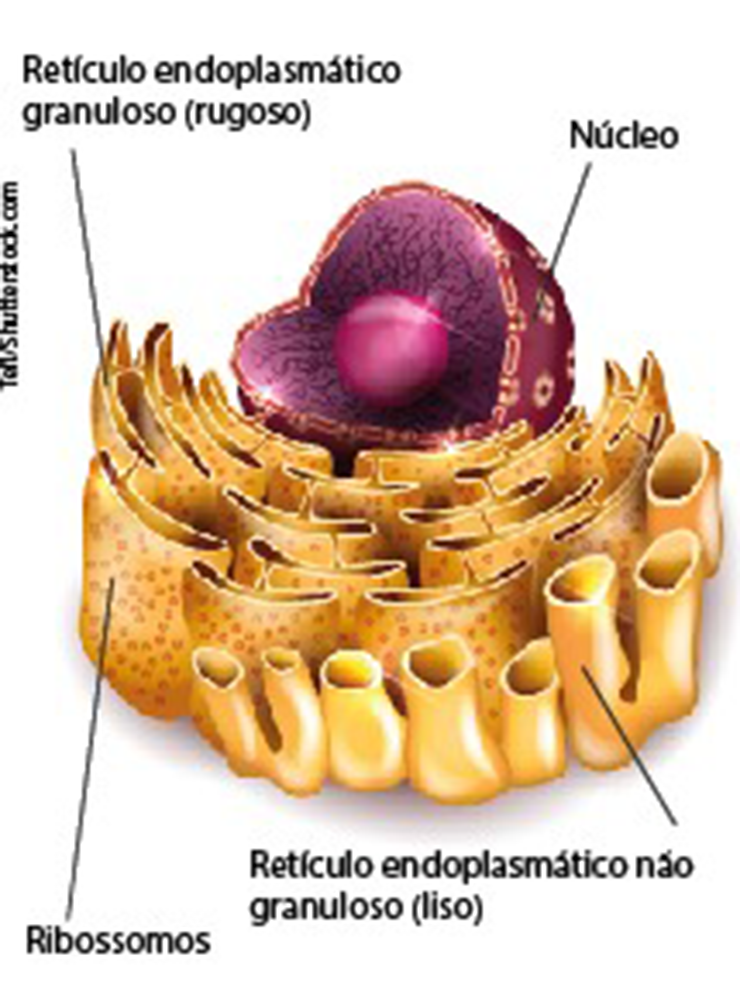
Representação esquemática do retículo endoplasmático, em amarelo.
Tefi/Shutterstock.com
Retículo endoplasmático não granuloso (ou liso)
Sem a presença de ribossomos acoplados à sua membrana, o retículo endoplasmático não granuloso, também conhecido como retículo endoplasmático liso, é responsável pela síntese de lipídeos, tais como fosfolipídeos e esteroides. Em seu interior, estão presentes enzimas que garantem também a síntese de colesterol e a sua posterior modificação em hormônios.
Trata-se de uma organela bastante comum em células do fígado, pois ela também é responsável por reações de destoxificação, isto é, atua na degradação do álcool e de outras drogas.
Em células musculares, o retículo endoplasmático liso é modificado e passa a ser conhecido como retículo sarcoplasmático, cuja principal função é armazenar íons Cálcio (Ca++), essenciais para o processo de contração muscular.
Retículo endoplasmático granuloso (ou rugoso)
Contínuo ao retículo endoplasmático não granuloso, o retículo endoplasmático granuloso, também chamado de retículo endoplasmático rugoso, diferencia-se por apresentar inúmeros ribossomos acoplados às suas membranas voltadas ao citoplasma. A presença dessas organelas confere ao retículo endoplasmático granuloso a função de sintetizar proteínas.
As proteínas produzidas poderão ser mantidas junto ao retículo endoplasmático rugoso ou transportadas para fora da célula. Ainda nesse retículo endoplasmático, as moléculas proteicas são modificadas e só então direcionadas aos seus destinos. Caso elas tenham de ser exportadas, o retículo endoplasmático rugoso as empacotará em vesículas que serão transferidas a uma outra organela membranosa: o complexo golgiense.
Complexo golgiense
Células eucarióticas apresentam um elaborado sistema de tráfego intracelular comandado pelo complexo golgiense, também conhecido por aparelho golgiense e complexo de Golgi. Alguns pesquisadores defendem que essa estrutura seja derivada das membranas do retículo endoplasmático e que essas membranas tenham sofrido modificações durante o processo evolutivo.
Localizada próximo ao núcleo e ao retículo endoplasmático, essa organela apresenta formato bastante característico e vários compartimentos achatados, conhecidos como cisternas, os quais se mantêm empilhados. Cerca de 4 a 6 cisternas, que podem estar conectadas, distribuem-se em pilhas, também conhecidas como golgiossomos ou dictiossomos, nos quais se diferenciam duas faces: a cis, voltada em direção ao núcleo e responsável pelo recebimento e pela entrada de moléculas derivadas do retículo endoplasmático; e a trans, direcionada à membrana plasmática, sendo responsável pela liberação das moléculas recebidas.
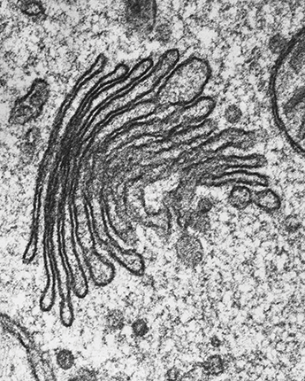
Complexo golgiense de uma alga unicelular, visto em microscopia eletrônica de transmissão.
Biophoto Associates/Science Photo Library/Fotoarena

Representação esquemática das estruturas que formam o complexo golgiense.
O complexo golgiense é responsável pela secreção de substâncias sintetizadas pela célula. Após receber as vesículas derivadas dos retículos endoplasmáticos, ele concentra e modifica as moléculas, transferindo-as entre as cisternas para, então, liberá-las.
Uma vez liberadas, as vesículas poderão seguir três diferentes destinos: a formação de lisossomos, quando no seu interior estiverem presentes enzimas que participam do processo de digestão celular; as vesículas de secreção se fundem à membrana plasmática, eliminando seu conteúdo no meio extracelular – processo de exocitose; a superfície celular (neste caso, o conteúdo das vesículas que se fundem à membrana plasmática passa a fazer parte dela).
Outra função secundária atribuída ao complexo golgiense é a produção de polissacarídeos – como a hemicelulose e a pectina. Esses carboidratos compõem a parede celular e contribuem para formar novas células vegetais. A partir dessa organela também se forma o acrossomo, uma espécie de bolsa presente nos espermatozoides e preenchida por enzimas, que, durante o encontro com o óvulo, garantem a degradação do envoltório do gameta feminino para ocorrer a fecundação.

Diferentes caminhos seguidos pelas vesículas liberadas pelo complexo golgiense.
Uerj 2019 Nos últimos anos, estudos mostraram que, em neurônios de pacientes com Alzheimer, uma enzima desencadeia a fragmentação de uma determinada organela citoplasmática. Essa fragmentação resulta em alterações no empacotamento e encaminhamento de proteínas para o exterior da célula.Nomeie a organela citoplasmática fragmentada nos casos dos pacientes com Alzheimer e apresente uma função dessa organela relacionada à reprodução humana.
Resposta
Resolução:O complexo golgiense é a organela citoplasmática responsável por armazenar e empacotar substâncias a serem liberadas das células, como algumas proteínas. Além disso, essa organela é responsável pela formação do acrossomo, uma vesícula presente nos espermatozoides responsável pela destruição da membrana plasmática do gameta feminino, possibilitando a fecundação.
Lisossomos
Derivados do complexo golgiense, os lisossomos são definidos como compartimentos delimitados por membrana, contendo cerca de 40 diferentes tipos de enzima hidrolítica, tais como proteases, nucleases e lipases. Todas elas se encontram ativas em pH ácido e, portanto, são também denominadas hidrolases ácidas. Assim, no interior dos lisossomos, o pH tende a se manter em torno de 4,5 a 5,0.
Diretamente relacionada à sua composição, a função dos lisossomos é a digestão intracelular, que pode ser feita após a endocitose de partículas pelas células (função heterofágica) ou como forma de renovar organelas obsoletas ou danificadas (função autofágica). Em ambos os casos, as moléculas resultantes da degradação podem ser absorvidas pelas células e utilizadas em seus processos de obtenção de energia ou podem, ainda, ser usadas como matéria-prima para o metabolismo plástico.

Representação esquemática da fusão do fagossomo aos lisossomos, com as enzimas digestivas na parte interna da organela.
Lisossomos: endocitose e exocitose
A membrana plasmática das células é capaz de se modificar e assim possibilita a entrada de partículas para o citoplasma por meio de processos de endocitose. Como resultado, são originados fagossomos que se fundem aos lisossomos, originando o vacúolo digestivo dentro da célula; assim, o material endocitado é degradado. Algumas moléculas são absorvidas e utilizadas pelas células para a manutenção de processos energéticos e de estruturas; o que não for degradado ou absorvido fica mantido em corpos residuais que são eliminados por exocitose. Nesse caso, a função dos lisossomos é heterofágica.
.png)
Esquema de uma célula com pseudópodes, mostrando o processo de digestão intracelular a partir de uma fagocitose.
Morte celular programada
Trata-se do mecanismo de eliminação de células de forma controlada em resposta a diferentes estímulos.
Existem dois tipos de morte celular programada: a autofagia e a apoptose.
Autofagia
Consiste no processo de digestão de organelas obsoletas pelos lisossomos da própria célula, contribuindo para a renovação dos componentes citoplasmáticos. Ainda não se sabe ao certo de onde surge a membrana que envolve essas organelas e dá origem ao autofagossomo. Acredita-se que os lisossomos interajam com ela e, assim, as organelas sejam destruídas.
Em condições de baixa disponibilidade de nutrientes, a autofagia garante boa parte das moléculas que são utilizadas para a produção de energia da própria célula. Além disso, a autofagia auxilia na defesa contra microrganismos invasores e é considerada uma forma eficiente de remoção completa de organelas.
Apoptose
Ocorre durante o desenvolvimento embrionário de alguns animais, pois garante a modelagem de algumas estruturas, como os dedos, após a eliminação das membranas interdigitais, ou o desaparecimento de estruturas, como a cauda presente em girinos. Nesse mecanismo, há a destruição gradual das células por meio de marcadores e alterações celulares específicas. As células em apoptose perdem água e têm suas mitocôndrias destruídas, bem como o núcleo e o material genético que, junto do citoplasma, formam “bolhas”, que englobam os corpos apoptóticos a serem fagocitados por células de defesa, como os macrófagos. Então, após a fagocitose das bolhas com os corpos apoptóticos, os lisossomos, inseridos nos macrófagos, entram em ação e digerem o conteúdodo fagossomo, ou seja, os corpos apoptóticos.
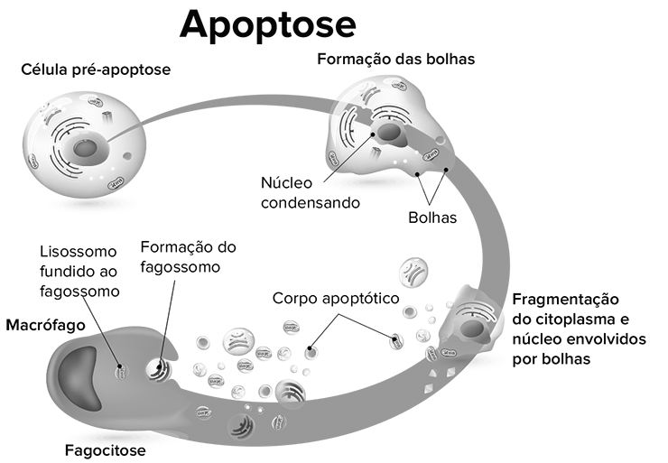
Processo de apoptose da célula.
Designua/Shutterstock.com
Peroxissomos
Assim como os lisossomos, os peroxissomos são organelas delimitadas por uma membrana que contém enzimas que degradam moléculas. Entretanto, os peroxissomos não se derivam do complexo golgiense.
Acredita-se que, nos primeiros eucariontes, os peroxissomos metabolizavam todo o oxigênio necessário para a célula, mas com o aparecimento das mitocôndrias essas funções tornaram-se restritas; porém, eles permanecem como locais de uso do oxigênio. Neles encontram-se enzimas oxidativas, que utilizam o oxigênio molecular e produzem moléculas de peróxido de hidrogênio (H2O2) ao degradar moléculas orgânicas. Entretanto, a água oxigenada é uma molécula tóxica para a célula, assim os peroxissomos a metabolizam por meio da catalase – enzima que reage com as moléculas de H2O2, decompondo-as em moléculas de água e gás oxigênio. Os peroxissomos presentes em células do fígado e dos rins degradam moléculas de ácidos graxos, facilitando sua utilização em processos energéticos, bem como atuam na oxidação do álcool e de outras substâncias tóxicas, contribuindo com o retículo endoplasmático não granuloso no processo de destoxificação.
Em alguns tipos de células de plantas oleaginosas (amendoim e gergelim), os peroxissomos são chamados de glioxissomos. Eles convertem ácidos graxos em açúcares durante a germinação, garantindo o suprimento energético necessário para se desenvolver.
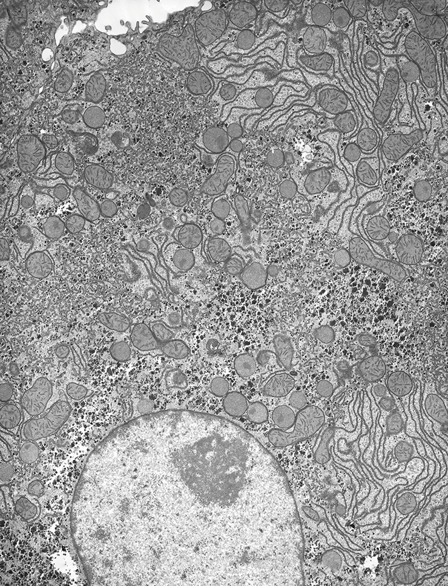
Peroxissomos (setas) vistos em uma célula de fígado, eletromicrografia de transmissão.
Microscape/Science Photo Library/Fotoarena
Vacúolos
Nas células eucarióticas, há diferentes tipos de vacúolo, cada um participando de processos específicos. De modo geral, podemos dizer que eles consistem em um compartimento delimitado por uma membrana.
Vimos anteriormente que, durante o processo de digestão intracelular, após a fusão entre fagossomo e lisossomo, há a formação do vacúolo digestivo, onde ocorre a degradação das partículas. Destacam-se ainda dois outros tipos de vacúolo: o pulsátil (contrátil) e o vegetal.
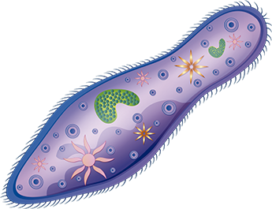
Representação esquemática de protozoário Paramecium, que vive em ambiente de água doce, com destaque para o vacúolo pulsátil (contrátil).
blueringmedia/iStockphoto.com
Vacúolo pulsátil ou contrátil
O vacúolo pulsátil ou contrátil é encontrado em células de alguns protistas que, necessariamente, vivem em ambiente dulcícola. Quando a osmose foi abordada, destacamos essas estruturas que exercem a função de osmorregulação nesses organismos, expulsando o excesso de água que naturalmente tende a entrar nas células devido à diferença de concentração entre os meios.
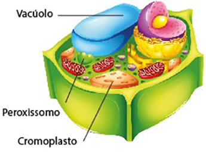
Representação esquemática de célula vegetal com destaque para vacúolo (em azul).
blueringmedia/iStockphoto.com
Vacúolo vegetal (de suco celular ou central)
O vacúolo vegetal, vacúolo de suco celular ou, ainda, vacúolo central corresponde a cerca de 30% do volume de uma célula vegetal e é envolto por uma membrana conhecida como tonoplasto. A função desempenhada por essa organela é variável e considerada semelhante à dos lisossomos, já que pode conter enzimas hidrolíticas. O vacúolo é responsável por controlar o volume da célula e manter a pressão de turgescência, garantindo a homeostase, além de armazenar nutrientes e outras substâncias produzidas pelas células.
Mitocôndrias
As mitocôndrias estão presentes em praticamente todas as células eucarióticas. Para compreendermos a origem dessas organelas, assim como a dos cloroplastos, temos que retomar a hipótese endossimbiótica apresentada anteriormente. Segundo essa teoria, acredita-se que mitocôndrias e cloroplastos tenham se originado a partir da simbiose estabelecida entre procariotos primitivos e as primeiras células eucarióticas.
Algumas características encontradas em ambas as organelas corroboram essa hipótese, sendo elas: a presença de duas membranas em sua estrutura, a presença de DNA circular próprio e ribossomos. Essas duas últimas características conferem às mitocôndrias e aos cloroplastos a habilidade de se autorreplicarem e serem capazes de produzir, em seus próprios compartimentos, parte das proteínas que as compõem.
A mitocôndria é responsável pelo processo de respiração celular, a partir do qual são sintetizadas as moléculas de ATP, que fornecem energia para as atividades celulares. A respiração celular será explorada em outros capítulos.
Nesse momento, é necessário destacar as principais características da estrutura das mitocôndrias. Como vimos, duas membranas as compõem: a membrana externa e a membrana interna, na qual se encontram dobras conhecidas como cristas mitocondriais. As cristas mitocondriais se projetam em direção ao compartimento interno, denominado matriz mitocondrial, e entre as duas membranas há o espaço intermembranar. Todas essas estruturas apresentam coleções únicas de proteínas que as definem e garantem que algumas etapas da respiração celular aconteçam de forma eficiente.

A. Mitocôndrias em eletromicrografia de transmissão; B. Representação de corte longitudinal de uma mitocôndria.
Plastos
Algumas organelas presentes em células vegetais compartilham características semelhantes e são classificadas como plastídeos ou plastos. Todas apresentam material genético próprio e se originam de um proplasto (ou proplastídeo). De forma geral, atribui-se aos cromoplastos funções fotossintéticas e aos leucoplastos o armazenamento de nutrientes. Entretanto, também podem atuar na síntese de ácidos graxos e aminoácidos.
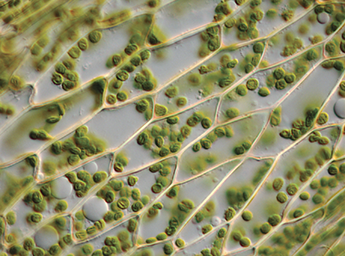
alanphillips/iStockphoto.com
Cromoplasto
Os cromoplastos contêm pigmentos que conferem coloração às partes das células nas quais se encontram e que podem ou não ser fotossinteticamente ativos. Pigmentos como os carotenoides, de coloração avermelhada, e a xantofila, de coloração amarelada, não realizam o processo de fotossíntese e se mostram de grande importância na atração de agentes polinizadores e dispersores ao conferir cor a estruturas como flores e frutos.
Cloroplasto
Os cloroplastos apresentam o pigmento clorofila, fundamental para a ocorrência da fotossíntese. Esse processo será mais bem detalhado na próxima unidade. É a partir dele que algumas células vegetais produzem matéria orgânica, principalmente a glicose, que é utilizada como fonte de energia desses vegetais.
A origem dessas organelas em células eucarióticas é explicada por meio da hipótese endossimbiótica e, assim como nas mitocôndrias, nos cloroplastos também são encontradas: duas membranas, o DNA circular próprio (DNA do cloroplasto ou DNA cloroplastidial) e os ribossomos.
O cloroplasto é revestido pela membrana externa, que recobre a membrana interna responsável por delimitar o interior da organela denominado estroma. Há, ainda, uma terceira membrana organizada em forma de inúmeros sacos achatados que se dispõem pelo estroma; cada uma dessas pequenas estruturas recebe o nome de tilacoides e, em seu interior (lúmen) estão contidas as moléculas de clorofila. O conjunto de tilacoides é conhecido como grana. Os granas se interligam por meio das lamelas.

A. Cloroplastos (estruturas verdes e arredondadas) no interior das células, observados em microscópio óptico; B. Representação esquemática do cloroplasto, em corte, mostrando seus componentes.
Aldona Griskeviciene/Shutterstock.com
Leucoplastos
Diferentemente dos cromoplastos, os leucoplastos não apresentam coloração e são especializados no armazenamento de diferentes nutrientes, tais como amido, proteínas e óleos. Em cada caso recebem um nome específico, sendo, respectivamente, chamados de amiloplastos, proteoplastos e oleoplastos.
Centríolos
Da mesma forma que os ribossomos, os centríolos não são organelas membranosas. Eles são constituídos de trios (trincas) de microtúbulos que totalizam um conjunto de nove peças, apresentando um arranjo cilíndrico.
Essas organelas se autoduplicam e um par delas é encontrado na região do centrossomo, participando do processo de divisão, pois as fibras do fuso que se ligam aos cromossomos e possibilitam a movimentação dessas estruturas ao longo do processo.

Representação esquemática dos centríolos.
Em algumas células, a partir dos centríolos, são formadas as estruturas locomotoras conhecidas como cílios e flagelos. Enquanto cílios são estruturas curtas e presentes em grande quantidade nas células que as apresentam, os flagelos são mais longos e encontrados em quantida-de reduzida.

Aplicando conhecimentos
1
Unicamp-SP 2016 As células apresentam estruturas e funções diferenciadas de acordo com o organismo ou tecido em que se encontram.
- Desenhe uma célula que contenha as organelas responsáveis pela respiração celular, pela fotossíntese, pela transcrição do RNA e pela síntese de proteínas.
- Descreva a morfologia e indique as funções das estruturas que delimitam a célula desenhada.
2
Associe corretamente as organelas abaixo com as respectivas funções dentro do citoplasma:
Organelas:
- Retículo endoplasmático não granuloso (liso)
- Mitocôndria
- Cloroplasto
- Centríolo
- Lisossomo
- Complexo golgiense
- Ribossomo
Funções:
( ) Produção de energia pela respiração celular.
( ) Síntese de proteínas.
( ) Secreção de substâncias.
( ) Vesícula com enzimas hidrolíticas, responsáveis pela digestão intracelular.
( ) Formação de cílios e flagelos.
( ) Organela responsável pela destoxificação.
( ) Organela onde ocorre a fotossíntese.
3
Os centríolos não são organelas formadas por membranas.
- O que compõe essas organelas? Cite duas funções dos centríolos.
- Os cílios são estruturas locomotoras, assim como os flagelos. Porém, eles são encontrados revestindo alguns órgãos do sistema respiratório. Qual função desempenham ali?
4
Fuvest-SP O retículo endoplasmático e o complexo de Golgi são organelas celulares cujas funções estão relacionadas. O complexo de Golgi
- recebe proteínas sintetizadas no retículo endoplasmático.
- envia proteínas nele sintetizadas para o retículo endoplasmático.
- recebe polissacarídeos sintetizados no retículo endoplasmático.
- envia polissacarídeos nele sintetizados para o retículo endoplasmático.
- recebe monossacarídeos sintetizados no retículo endoplasmático e envia para ele polissacarídeos.
5
Fuvest-SP 2020 Analise os esquemas simplificados das células 1 e 2.
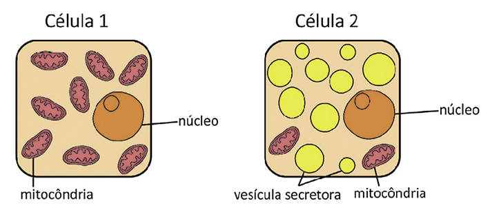
Células como as representadas em 1 e 2 podem ser encontradas, respectivamente, no:
sangue e no fígado.
osso e no pâncreas.
músculo esquelético e no pâncreas.
músculo cardíaco e osso.
pâncreas e no fígado.
Consolidando saberes
1
Famerp-SP 2017
As imagens representam três organelas encontradas numa célula secretora de enzimas.
www.the-scientist.com)(Karen Arms e Pamela S. Camp.Biology, 1995. Adaptado.)
Considerando que a referida célula elimine enzimas digestivas, a sequência correta, do local de síntese até a saída de tais enzimas dessa célula, é:
- 1 2 3.
- 1 3 2.
- 2 1 3.
- 3 1 2.
- 2 3 1.
2
PUC-RS 2017
Sobre o citoesqueleto, é correto afirmar que
- está presente em células procarióticas e eucarióticas.
- está relacionado à ciclose, contínuo movimento de organelas e substâncias no citosol, envolvendo proteínas como actina e miosina.
- organiza a estrutura interna celular, mas não define a forma da célula.
- o movimento ameboide de algumas células independe de suas adaptações.
- os microfilamentos de actina que o compõem se originam dos centrossomos, também chamados de centro de organização celular.
3
Fuvest-SP 2020
Analise o esquema de uma célula adulta.
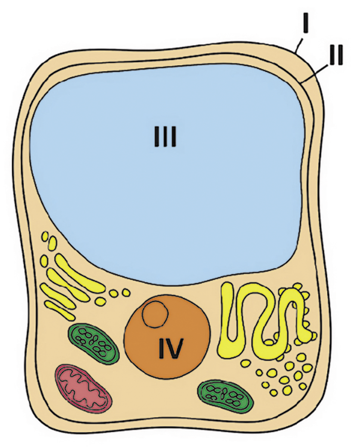
www.the-scientist.com)(Karen Arms e Pamela S. Camp.Biology, 1995. Adaptado.)
As estruturas I, II, III e IV caracterizam-se pela presença, respectivamente, de:
- glicídeo, lipídeo, água e ácido nucleico.
- proteína, glicídeo, água e ácido nucleico.
- lipídeo, proteína, glicídeo e ácido nucleico.
- lipídeo, glicídeo, ácido nucleico e água.
- oglicídeo, proteína, ácido nucleico e água
4
Uerj 2018
A ausência da proteína dineína, importante para o bom funcionamento de flagelos e cílios, é uma consequência de um distúrbio hereditário em seres humanos. Indique o motivo pelo qual essa alteração genética resulta em frequentes problemas respiratórios nos seus portadores. Em seguida, relacione esse distúrbio com a infertilidade em indivíduos do sexo masculino.
5
Fuvest-SP 2015
Em certa doença humana, enzimas digestivas intracelulares (hidrolases) são transportadas do complexo golgiense para a membrana celular e secretadas, em vez de serem encaminhadas para as organelas em que atuam.Nos indivíduos clinicamente normais,
- em que organelas celulares essas enzimas digestivas atuam?
- além de materiais capturados do meio externo, que outros materiais são digeridos pela célula?
- qual é o destino dos produtos da digestão intracelular?
6
Unicamp-SP 2017
Ao observar uma célula, um pesquisador visualizou uma estrutura delimitada por uma dupla camada de membrana fosfolipídica, contendo um sistema complexo de endomembranas repleto de proteínas integrais e periféricas. Verificou também que, além de conter seu próprio material genético, essa estrutura ocorria em abundância em todas as regiões meristemáticas de plantas. Qual seria essa estrutura celular?
- Cloroplasto.
- Mitocôndria.
- Núcleo.
- Retículo endoplasmático.
7
Unicamp-SP 2018
Em alguns casos, as organelas celulares podem transformar-se e perder a funcionalidade, como acontece com os cloroplastos. Em plantas com alta atividade de fotossíntese, mas com crescimento paralisado e sem drenos ativos (como flores e frutos), os cloroplastos podem dar origem a
- protoplastos – células vegetais desprovidas de parede celular.
- amiloplastos – organelas em que ocorre acúmulo de amido.
- proplastos – organelas imaturas que dão origem a cloroplastos.
- cromoplastos – organelas em que ocorre acúmulo de pigmentos.
8
Unesp 2016
A professora distribuiu aos alunos algumas fichas contendo, cada uma delas, uma descrição de características de uma organela celular. Abaixo, as fichas recebidas por sete alunos.
| Fernando |
| Auxílio na formação de cílios e flagelos |
| Carlos |
| Síntese de proteínas que serão exportadas pela célula. |
| Mayara |
| Digestão dos componentes desgastados da própria célula. |
| Lígia |
| Síntese de ácidos nucleicos. |
| Giovana |
| Associação ao RNAm para desempenhar sua função. |
| Giovana |
| Síntese de alguns glicídios e modificação de proteínas, preparando-as para secreção. |
| Giovana |
| Presença de equipamento próprio para a síntese de proteínas |
A professora também desenhou na quadra de esportes da escola uma grande célula animal, com algumas de suas organelas (fora de escala), conforme mostra a figura.

Ao comando da professora, os alunos deveriam correr para a organela cuja característica estava descrita na ficha em seu poder.Carlos e Mayara correram para a organela indicada pela seta 7; Fernando e Rodrigo correram para a organela indicada pela seta 5; Giovana e Gustavo correram para a organela indicada pela seta 4; Lígia correu para a organela indicada pela seta 6.Os alunos que ocuparam o lugar correto na célula desenhada foram
- protopMayara, Gustavo e Lígia.
- Rodrigo, Mayara e Giovana.
- Gustavo, Rodrigo e Fernando.
- Carlos, Giovana e Mayara.
- Fernando, Carlos e Lígia.
9
Unesp 2017
Em cada um dos gráficos A e B, há três curvas, porém apenas uma delas, em cada gráfico, representa corretamente o fenômeno estudado.

No gráfico A, o fenômeno estudado é a atividade dos lisossomos na regressão da cauda de girinos na metamorfose. No gráfico B, o fenômeno estudado é a atividade dos peroxissomos na conversão dos lipídios em açúcares que serão consumidos durante a germinação das sementes. A curva que representa corretamente o fenômeno descrito pelo gráfico A e a curva que representa corretamente o fenômeno descrito pelo gráfico B são, respectivamente,
- 1 e 1.
- 3 e 3.
- 3 e 1.
- 1 e 2.
- 2 e 2.
10
Unicid-SP
Entre os dedos de um embrião há membranas que são eliminadas durante a modelagem das mãos. Para que isso ocorra, existe um mecanismo celular que promove a remoção celular, resultando no desaparecimento das membranas. Esse mecanismo é denominado
- endocitose, pois ocorre o englobamento programado de substâncias tóxicas do meio, levando à morte da célula.
- endossimbiose, devido à ativação dos genes presentes nas mitocôndrias, que aumentam o metabolismo e levam à morte celular por exaustão.
- heterofagia, pois isso leva à autodestruição de organelas membranosas diferentes.
- necrose celular, pois ocorre um aumento no volume das organelas e consequente destruição celular.
- apoptose, pois ocorre uma liberação de fatores, geneticamente programada, levando à morte da célula.

No enem é assim
As questões selecionadas nesta seção são prioritariamente do Enem, mas questões de vestibulares diversos que apresentam características semelhantes aos itens do referido exame também podem ser usadas como recurso para estudo.
1
Enem PPL 2016 Um pesquisador preparou um fragmento do caule de uma flor de margarida para que pudesse ser observado em microscopia óptica. Também preparou um fragmento de pele de rato com a mesma finalidade. Infelizmente, após algum descuido, as amostras foram misturadas. Que estruturas celulares permitiriam a separação das amostras, se reconhecidas?
- Ribossomos e mitocôndrias, ausentes nas células animais.
- Centríolos e lisossomos, organelas muito numerosas nas plantas.
- Envoltório nuclear e nucléolo, característicos das células eucarióticas.
- Lisossomos e peroxissomos, organelas exclusivas de células vegetais.
- Parede celular e cloroplastos, estruturas características de células vegetais.
2
Uece 2017 As células procariontes são reconhecidas como aquelas que não possuem material genético delimitado por um envoltório nuclear. Sobre os procariontes, é possível afirmar que contêm apenas
- complexo golgiense e ribossomos.
- ribossomos e parede celular.
- retículo endoplasmático e parede celular.
- mitocôndria e plasmídeos.
3
Enem Quando colocados em água, os fosfolipídeos tendem a formar lipossomos, estruturas formadas por uma bicamada lipídica, conforme mostrado na figura. Quando rompida, essa estrutura tende a se reorganizar em um novo lipossomo.

Disponível em: http://course1.winona.edu. Acesso em 1 mar. 2012 (Adaptado).
Esse arranjo característico se deve ao fato de os fosfolipídios apresentarem uma natureza
- polar, ou seja, serem inteiramente solúveis em água.
- apolar, ou seja, não serem solúveis em solução aquosa.
- anfotérica, ou seja, podem comportar-se como ácidos e bases.
- insaturada, ou seja, possuírem duplas ligações em sua estrutura.
- anfifílica, ou seja, possuírem uma parte hidrofílica e outra hidrofóbica.
4
Unesp 2014 A figura apresenta os esquemas de duas células.

(http://macanicacelular.webnode.com.br. Adaptado.)
Porém, o ilustrador cometeu um engano ao identificar as estruturas celulares. É correto afirmar que
- II é uma célula vegetal e o engano está na identificação do complexo golgiense nesta célula, uma vez que este ocorre em células animais, mas não em células vegetais.
- II é uma célula animal e o engano está na identificação do vacúolo em ambas as células, além de este ser característico de células vegetais, mas não de células animais.
- II é uma célula animal e o engano está na identificação dos centríolos nesta célula, uma vez que estes são característicos de células vegetais, mas não de células animais.
- I é uma célula animal e o engano está na identificação das mitocôndrias em ambas as células, além de estas ocorrerem em células animais, mas não em células vegetais.
- I é uma célula vegetal e o engano está na identificação da membrana plasmática nesta célula, uma vez que esta ocorre em células animais, mas não em células vegetais.
5
Enem Osmose é um processo espontâneo que ocorre em todos os organismos vivos e é essencial à manutenção da vida. Uma solução 0,15 mol/L de NaCL (cloreto de sódio) possui a mesma pressão osmótica das soluções presentes nas células humanas.A imersão de uma célula humana em uma solução 0,20 mol/L de NaCL tem, como consequência, a
- adsorção de íons Na+ sobre a superfície da célula.
- difusão rápida de íons Na+ para o interior da célula.
- diminuição da concentração das soluções presentes na célula.
- transferência de íons Na+ da célula para a solução.
- transferência de moléculas de água do interior da célula para a solução.
6
Enem PPL 2016 Companheira viajante Suavemente revelada? Bem no interior de nossas células, uma clandestina e estranha alma existe. Silenciosamente, ela trama e aparece cumprindo seus afazeres domésticos cotidianos, descobrindo seu nicho especial em nossa fogosa cozinha metabólica, mantendo entropia em apuros, em ciclos variáveis noturnos e diurnos. Contudo, raramente ela nos acende, apesar de sua fornalha consumi-la. Sua origem? Microbiana, supomos. Julga-se adaptada às células eucariontes, considerando-se como escrava — uma serva a serviço de nossa verdadeira evolução.McMURRAY, W. C. The traveler. Trends in Biochemical Sciences, 1994 (adaptado).A organela celular descrita de forma poética no texto é o(a)
- centríolo.
- lisossomo.
- mitocôndria.
- complexo golgiense.
- retículo endoplasmático liso.
7
Enem 2017 Visando explicar uma das propriedades da membrana plasmática, fusionou-se uma célula de camundongo com uma célula humana, formando uma célula híbrida. Em seguida, com o intuito de marcar as proteínas de membrana, dois anticorpos foram inseridos no experimento, um específico para as proteínas de membrana do camundongo e outro para as proteínas de membrana humana. Os anticorpos foram visualizados ao microscópio por meio de fluorescência de cores diferentes.

ALBERTS, B. et al. Biologia molecular da célula. Porto Alegre:Artes Médicas, 1997 (adaptado).
A mudança observada da etapa 3 para a etapa 4 do experimento ocorre porque as proteínas
- movimentam-se livremente no plano da bicamada lipídica.
- lisossomo.
- auxiliam o deslocamento dos fosfolipídios da membrana plasmática.
- são mobilizadas em razão da inserção de anticorpos.
- são bloqueadas pelos anticorpos.
8
Enem 2018 Companhias que fabricam jeans usam cloro para o clareamento, seguido de lavagem. Algumas estão substituindo o cloro por substâncias ambientalmente mais seguras como peróxidos, que podem ser degradados por enzimas chamadas peroxidases. Pensando nisso, pesquisadores inseriram genes codificadores de peroxidases em leveduras cultivadas nas condições de clareamento e lavagem dos jeans e selecionaram as sobreviventes para produção dessas enzimas.
TORTORA, G. J.; FUNKE, B. R.; CASE, C. L. Microbiologia. Rio de Janeiro: Artmed, 2016 (adaptado).
Nesse caso, o uso dessas leveduras modificadas objetiva:
- reduzir a quantidade de resíduos tóxicos nos efluentes da lavagem.
- eliminar a necessidade de tratamento da água consumida.
- elevar a capacidade de clareamento dos jeans.
- aumentar a resistência do jeans a peróxidos.
- associar ação bactericida ao clareamento.
9
Enem 2017 Uma das estratégias para a conservação de alimentos é o salgamento, adição de cloreto de sódio (NaCL), historicamente utilizado por tropeiros, vaqueiros e sertanejos para conservar carnes de boi, porco e peixe. O que ocorre com as células presentes nos alimentos preservados com essa técnica?
- O sal adicionado diminui a concentração de solutos em seu interior.
- O sal adicionado desorganiza e destrói suas membranas plasmáticas.
- A adição de sal altera as propriedades de suas membranas plasmáticas
- Os íons Na+ e CL- provenientes da dissociação do sal entram livremente nelas.
- A grande concentração de sal no meio extracelular provoca a saída de água de dentro delas
10
Enem 2019 A fluidez da membrana celular é caracterizada pela capacidade de movimento das moléculas componentes dessa estrutura. Os seres vivos mantêm essa propriedade de duas formas: controlando a temperatura e/ou alterando a composição lipídica da membrana. Neste último aspecto, o tamanho e o grau de insaturação das caudas hidrocarbônicas dos fosfolipídios, conforme representados na figura, influenciam significativamente a fluidez. Isso porque quanto maior for a magnitude das interações entre os fosfolipídios, menor será a fluidez da membrana.

Assim, existem bicamadas lipídicas com diferentes composições de fosfolipídios, como as mostradas de I a V.

Qual das bicamadas lipídicas apresentadas possui maior fluidez?
- I
- II
- III
- IV
- V
11
Enem 2019 Uma cozinheira colocou sal a mais no feijão que estava cozinhando. Para solucionar o problema, ela acrescentou batatas cruas e sem tempero dentro da panela. Quando terminou de cozinhá-lo, as batatas estavam salgadas, porque absorveram parte do caldo com excesso de sal. Finalmente, ela adicionou água para completar o caldo do feijão.
O sal foi absorvido pelas batatas por:
- osmose, por envolver apenas o transporte do solvente.
- fagocitose, porque o sal transportado é uma substância sóIida.
- exocitose, uma vez que o sal foi transportado da água para a batata.
- pinocitose, porque o sal estava diluído na água quando foi transportado.
- difusão, porque o transporte ocorreu a favor do gradiente de concentração.
12
Enem 2015 Muitos estudos de síntese e endereçamento de proteínas utilizam aminoácidos marcados radioativamente para acompanhar as proteínas, desde fases iniciais de sua produção até seu destino final. Esses ensaios foram muito empregados para estudo e caracterização de células secretoras.
Após esses ensaios de radioatividade, qual gráfico representa a evolução temporal da produção de proteínas e sua localização numa célula secretora?

13
Enem Uma indústria está escolhendo uma linhagem de microalgas que otimize a secreção de polímeros comestíveis, os quais são obtidos do meio de cultura de crescimento. Na figura podem ser observadas as proporções de algumas organelas presentes no citoplasma de cada linhagem.
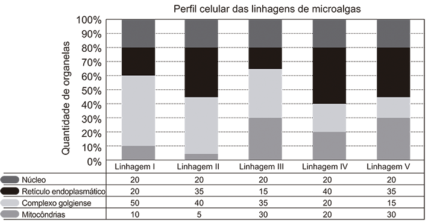
Qual é a melhor linhagem para se conseguir maior rendimento de polímeros secretados no meio de cultura?
- I
- II
- III
- IV
- V
14
UPF-RS 2017 Analise a figura e assinale a alternativa que indica o que é representado nela.

- O surgimento das células procariotas.
- A teoria celular.
- A teoria da endossimbiose.
- A teoria da abiogênese.
- A origem da vida.
15
Enem 2018 O nível metabólico de uma célula pode ser determinado pela taxa de síntese de RNAs e proteínas, processos dependentes de energia. Essa diferença na taxa de síntese de biomoléculas é refletida na abundância e características morfológicas dos componentes celulares. Em uma empresa de produção de hormônios proteicos a partir do cultivo de células animais, um pesquisador deseja selecionar uma linhagem com o metabolismo de síntese mais elevado, dentre as cinco esquematizadas na figura.

Qual linhagem deve ser escolhida pelo pesquisador?
- I
- II
- III
- IV
- V